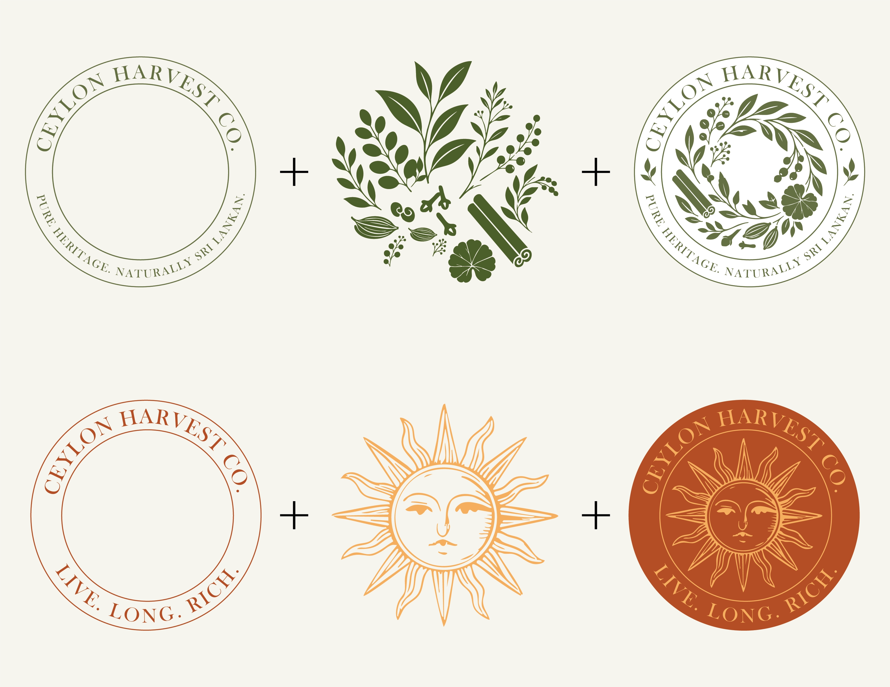
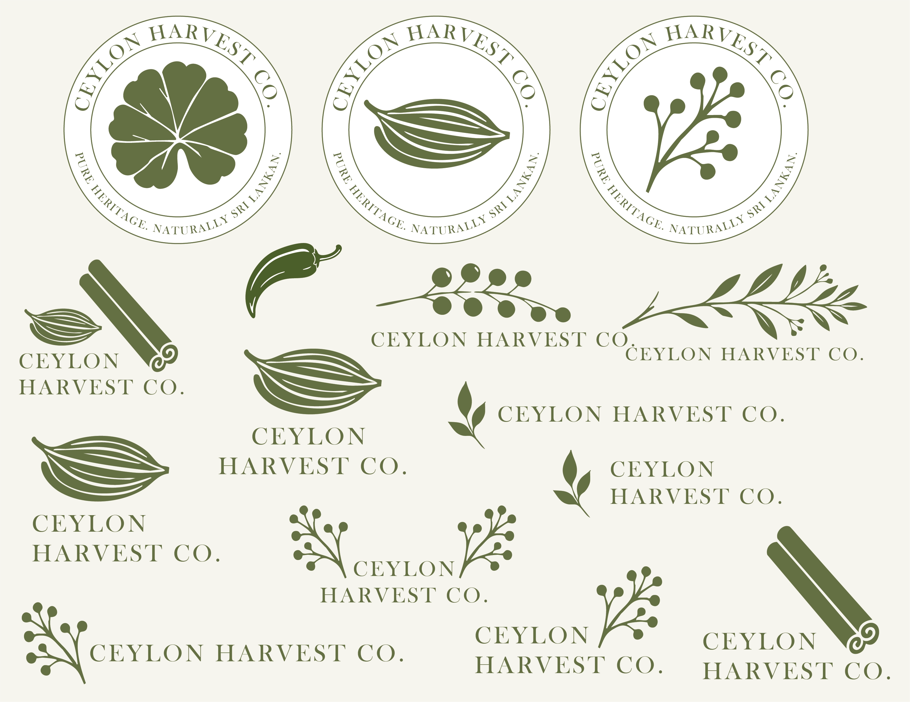
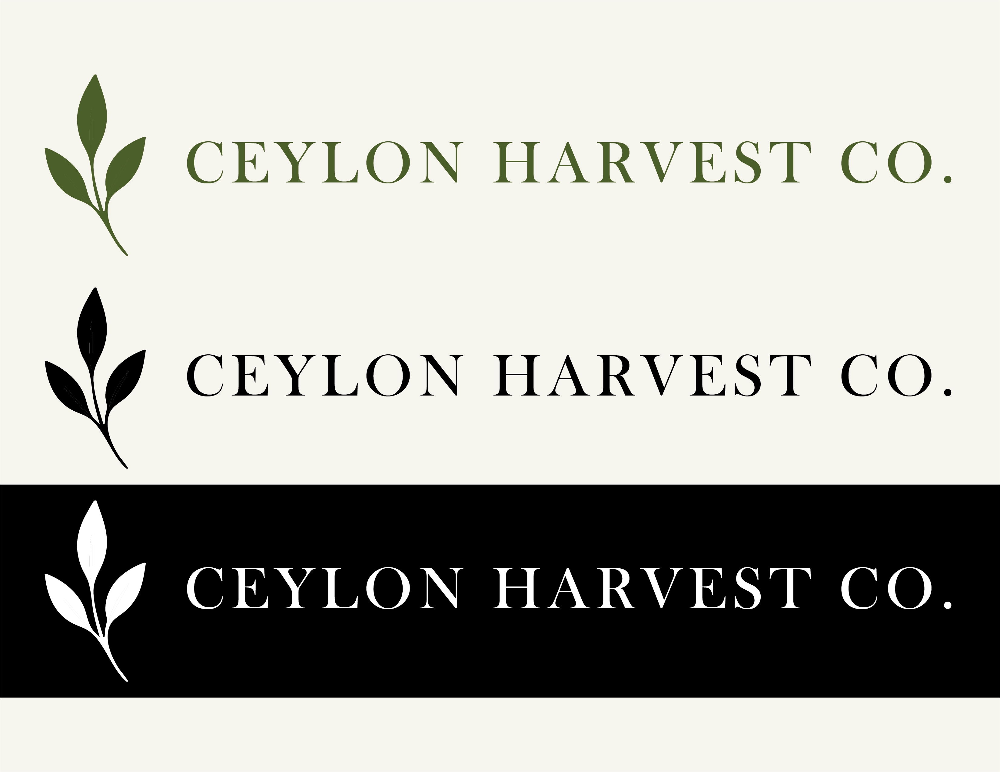
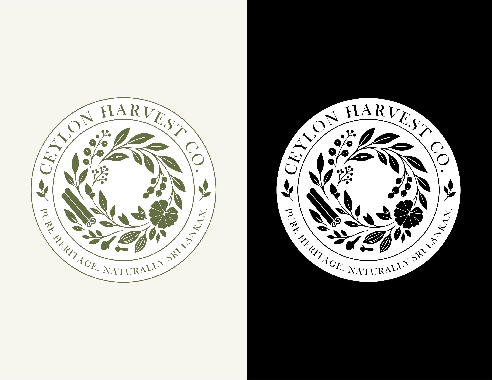

Ceylon Harvest Co.
A 3,000-year-old tradition, presented with modern premium confidence.



“We speak with quiet confidence. Our language is precise, factual, and grounded in expertise—never ornamental, never borrowed from the tourism playbook.”





